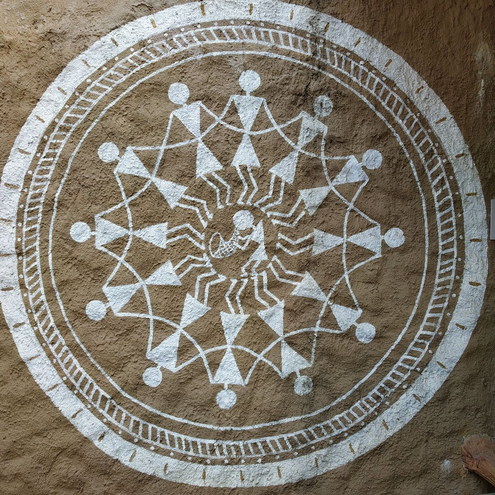

वारली
Warli
The Warli people of the Sahyadri foothills paint their lives — dances, harvests, weddings, forests — in a grammar of just three shapes.
- Region
- Palghar, Dahanu, Talasari and Jawhar, north Maharashtra
- Makers
- The Warli Adivasi community; traditionally women painted for weddings, and Jivya Soma Mashe took the art onto paper in the 1970s
- Surface
- Hut walls plastered with mud, cow-dung and red ochre (geru)
- Medium
- Rice paste mixed with water and gum, applied with a chewed bamboo stick
- Shapes
- Circle (sun, moon), triangle (mountains, trees, the human body), square (the sacred chauk)
- Palette